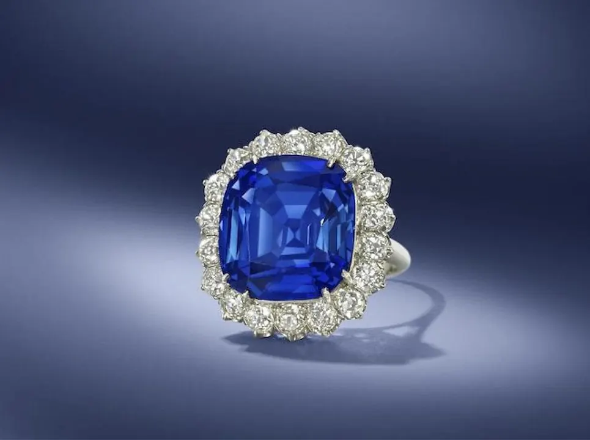

加熱工藝細節：窯裡發生了什麼化學反應
加熱紅藍寶石不是「烤一烤」——還原、氧化、溫度、時間，窯裡是一場精密的化學舞蹈。

核心定義
熱處理是紅藍寶石最主流的優化工藝：把寶石放入高溫窯，透過控制溫度、時間與「氛圍」（氧化或還原氣體環境），改變寶石的顏色與透明度。它不是簡單的「烤」，而是一場可重現的化學工程。
核心機制有三：改變離子價態（影響顏色）、溶解針狀內含物（提升淨度）、讓部分包裹體爆裂重結晶（留下加熱證據）。加熱的最終目的，是讓寶石「呈現它最美麗的潛力」。
特徵與分類
| 參數 | 典型範圍 | 作用 |
|---|---|---|
| 溫度 | 1300–1800°C（剛玉） | 驅動化學反應 |
| 氛圍 | 氧化（有氧）/還原（無氧） | 決定離子價態方向 |
| 時間 | 數小時到數日 | 反應完成度 |
| 升溫曲線 | 漸進 | 防止熱震破裂 |
| 冷卻 | 受控 | 防止再次析出 |
還原環境（如加碳）可把 Fe³⁺ 還原為 Fe²⁺，讓灰藍變鮮藍；氧化環境可把 Fe²⁺ 氧化為 Fe³⁺，讓過暗的藍變淡。溫度控制不當則可能燒裂、燒白——加熱是一門「精準的破壞與重建」。
科學原理
還原加熱的化學：Fe³⁺（灰調來源）在高溫無氧環境中獲取電子變為 Fe²⁺，與鈦離子形成有效的電荷轉移對——藍色變純、灰感消失。氧化加熱反之，Fe²⁺ 失去電子變 Fe³⁺，藍色變淡甚至呈黃綠色調。
針狀金紅石在高溫下「回溶」：TiO₂ 溶解回剛玉晶格，絲絨消失、透明度提升——但同時也帶走星光效應的可能。加熱的取捨：要淨度，就沒有星光；要星光，就不能高溫。地質的取捨，在窯裡重演。
鑑定與鑑別方法
- 顯微鏡找加熱證據：斷針、暈環、熔融包裹體
- 紫外螢光：加熱紅寶的螢光強度可能改變
- 光譜分析：離子價態改變會反映在吸收譜
- 對照權威實驗室報告的處理欄
- 留意「低溫加熱無痕跡」的可能：實驗室寫的是「未見加熱證據」
市場行情與保養建議
市場上，加熱與否是紅藍寶價格的第一分水嶺：無燒頂級紅藍寶單克拉價可數倍於加熱品。但「加熱」本身不是貶義——它是誠實揭露的優化，市場完全接受有燒品（前提是標示清楚）。
投資與收藏建議：無燒＋權威證書是頂級配置；日常選購，有燒高品質的性價比遠高於勉強入門的無燒——先看美，再看燒不燒。
常見誤區
加熱工藝有數百年歷史，是寶石業公認的傳統優化；它不改變寶石成分，只加速地質過程。問題在「不揭露」，不在「加熱」本身。
市面九成紅藍寶都加熱過，它們依然是天然寶石、依然有行情與美感。加熱品價值低於無燒同級，但不代表「沒價值」。
冷知識
斯里蘭卡與泰國的傳統加熱技藝流傳數百年，用炭火與陶罐就能提色——現代窯只是把古法做得更精準。
色帶明顯的藍寶經過還原加熱，色差可大幅縮小——加熱不只是美容，還是「勻色」的工具。
反直覺觀點
高溫溶解金紅石針，淨度提升的代價是星光消失——加熱是一場交易：要通透，就放棄星光。寶石的每一次優化，都是一道選擇題。
無燒是「地質原味」市場、有燒是「優化美學」市場——兩者都合法、都有行情，價格體系卻完全不同。買之前，先確認自己站在哪個市場。